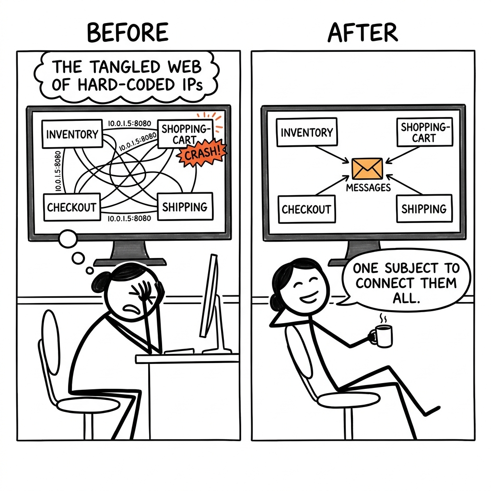

Priya, a developer building an e-commerce site, moves her inventory program to a new server, and suddenly the shopping-cart, checkout, and shipping programs all crash. Her real competitor isn't another messaging tool; it's the tangled web of hard-coded IP addresses and port numbers she now has to hunt down and fix in every single program.

The trade it makes versus the dominant alternative.
What it gives up
- NATS gives up being a "system of record" by default, which is the core identity of systems like Kafka.
- It maintains two distinct messaging models (core pub/sub and JetStream streaming), which can add a slight learning curve.
- It forgoes the vast ecosystem of tools built specifically for Kafka's log-centric architecture, like Kafka Connect.
- Core NATS offers "at-most-once" delivery, sacrificing the default "at-least-once" guarantee that durable systems provide out of the box.
What it gets in return
- It gains extreme operational simplicity by being a single, dependency-free binary that can run almost anywhere.
- It serves high-performance, low-latency use cases where Kafka's mandatory persistence would be unnecessary overhead.
- It offers a single system that scales from simple messaging to durable streaming, reducing architectural complexity.
- It has a native, decentralized multi-tenancy model built for modern distributed systems, avoiding complex ACL management.
Kafka's identity and ecosystem are built entirely around the durable, replayable log. Offering a simple, non-durable mode would undermine its core value proposition as a system of record and cannibalize its own positioning. Architecturally, adding a separate transient messaging path would be like building a second product, destroying the elegance of its "everything is a log" design. Similarly, adopting NATS's decentralized security model would require a fundamental break from centralized ACLs, invalidating years of community tooling and operational knowledge.
Four dimensions that actually split the field.
- Default Messaging Behavior: Is the system primarily a simple message passer or a durable, replayable log out of the box?
- Secure Data Sharing: Can you securely and dynamically share specific data streams between different teams or tenants without a central admin?
- Running the System: Can you run the core system from a single file without external dependencies like Zookeeper or a language runtime?
- Persistence is Optional: Can you run the system in a high-performance, non-persistent mode and add durability later?
| Product | Default Messaging Behavior | Secure Data Sharing | Running the System | Persistence is Optional |
|---|---|---|---|---|
| NATS | Simple by defaultCore NATS is a fast, fire-and-forget message passer; the more complex JetStream log system is opt-in via a config flag (-js). | Built-inNATS has a decentralized security model of accounts, with stream and service imports/exports managed by JWTs (server/accounts.go). | One fileThe nats-server is a single Go binary with no external dependencies needed to run (main.go). | YesPersistence is provided by the JetStream subsystem, which is disabled by default and can be enabled with a flag (-js) and configured in server/jetstream.go. |
| Apache Kafka | Durable log onlyKafka's core abstraction is a durable, replayable log; it does not have a simple, transient messaging mode. | Via ACLsKafka uses centralized Access Control Lists for authorization, which are powerful but less tailored for dynamic, cross-tenant sharing. | Requires frameworkKafka is a JVM application and historically required a separate Zookeeper cluster for coordination, making it complex to deploy. | NoPersistence is fundamental to Kafka's design as a distributed log; it cannot be disabled. |
| RabbitMQ | Message queueRabbitMQ is a traditional message broker that routes messages to ephemeral or durable queues, which are then consumed. | Via vhostsUses virtual hosts for multi-tenancy, which provides strong isolation but not the granular, dynamic data sharing of NATS imports/exports. | Requires frameworkRabbitMQ requires an Erlang/OTP runtime environment, which is an external dependency that must be installed and managed. | PartialMessages can be marked as transient or persistent, but the model is a queue, not a replayable log like JetStream. |
| Redis | Simple by defaultRedis Pub/Sub is a simple fire-and-forget system; Redis Streams provides a log model, but it's a separate command set. | Via ACLsRedis provides an ACL system for user permissions, but it lacks the decentralized, policy-based import/export model of NATS. | One fileLike NATS, Redis is a single binary with no external runtime dependencies, known for its operational simplicity. | YesCore Redis Pub/Sub has no persistence guarantees; persistence for the entire dataset is configured separately via RDB or AOF. |
Features hiding in the codebase that the README doesn't advertise. Each one is a bet about where the product is going.
- 1Built-in service latency trackingserver/accounts.go: serviceLatency struct, TrackServiceExportWithSampling()NATS is not just a transport layer, but an observable service fabric. The bet is that as request-reply workloads become more critical, built-in latency metrics will be a key differentiator against simpler message queues.
- 2Weighted subject mapping for traffic shapingserver/accounts.go: AddWeightedMappings(), mapping structThe product is moving towards service mesh territory, managing not just message delivery but also routing logic. This enables canary deployments and A/B testing at the messaging layer, reducing client-side complexity.
- 3Leaf node architecture for edge computingserver/client.go: const LEAF, server/leafnode.goThe network edge is the next frontier for distributed systems. NATS is betting that a dedicated, secure protocol for connecting edge clusters to a central hub, with awareness of the interest graph, is critical infrastructure.
- 4TPM support for hardware-backed encryptionserver/jetstream.go: func (s *Server) initJetStreamEncryption()For high-security environments, software-only key management is insufficient. The bet is that hardware-level security for JetStream's at-rest encryption will be a requirement for adoption in finance, government, and critical IoT.
- 5Latency-aware data compressionserver/client.go: c.out.cw *s2.Writer, server/route.go: CompressionS2AutoNetwork bandwidth is not always cheap or plentiful, especially at the edge or between data centers. A smart, built-in compression that adapts to network conditions is a bet on optimizing for real-world, heterogeneous network environments.
- 6Full-featured administration via internal APIserver/jetstream_api.go: JSApiStreamSnapshot, JSApiStreamRestore, JSApiLeaderStepDownCloud-native systems require automation at every level. The bet is that operators will prefer managing infrastructure using the same NATS protocol they use for applications, enabling GitOps-style management and deeper integration.
Features every competitor ships that this codebase deliberately doesn't. Strategy is choosing what not to do.
- 1No plugin architectureFeatures like MQTT and websockets are compiled in; no
plugins/directory or dynamic loading code.Prioritizes performance, operational simplicity, and reliability over ultimate extensibility. A single binary is easy to deploy and manage, avoiding dependency hell with plugins. Risk: The core team becomes a bottleneck for new protocols. - 2No built-in web dashboardserver/server.go defines HTTP endpoints like /varz and /connz which serve JSON, but no bundled UI.Commits to being a component in a larger observability stack, not an all-in-one solution. This avoids the cost of maintaining a complex UI and encourages integration with best-of-breed tools like Grafana. Risk: Higher barrier to entry for users wanting a simple, out-of-the-box visualization tool.
- 3No native SSO or federated identity supportAuth logic in server/accounts.go and server/client.go is built on NKeys, JWTs, and tokens, with no mention of LDAP, OIDC, or SAML.The security model is self-contained, decentralized, and built on modern cryptography, fitting its distributed systems target. This simplifies deployment in isolated environments. Risk: More integration work for enterprises needing to connect with existing identity providers.
- 4No external database for persistenceCore NATS is in-memory; JetStream uses its own log-structured file store in
StoreDir, with no database connectors.Ensures maximum performance for core messaging by avoiding disk I/O. It positions JetStream as the single, opinionated persistence layer, preventing users from using potentially slow or misconfigured backends. Risk: Less flexibility for users wanting to leverage existing databases. - 5No multi-message distributed transactionsNo BeginTx/Commit/Rollback commands in the protocol; JetStream's
AllowAtomicPublishis for batch atomicity, not general transactions.Keeps the server simple and fast by avoiding the complexity and performance overhead of two-phase commit protocols. This pushes transactional logic to the application layer. Risk: More complex for developers who need strict transactional guarantees across multiple, independent messages.